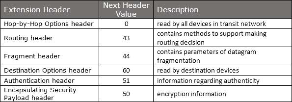
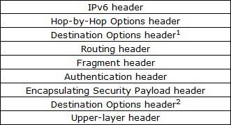
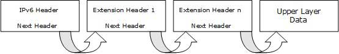

IPv6 - Headers
The wonder of IPv6 lies in its header. An IPv6 address is 4 times larger than IPv4, but surprisingly, the header of an IPv6 address is only 2 times larger than that of IPv4. IPv6 headers have one Fixed Header and zero or more Optional (Extension) Headers. All the necessary information that is essential for a router is kept in the Fixed Header. The Extension Header contains optional information that helps routers to understand how to handle a packet/flow.
Fixed Header

IPv6 fixed header is 40 bytes long and contains the following information.
| S.N. | Field & Description |
|---|---|
| 1 | Version (4-bits): It represents the version of Internet Protocol, i.e. 0110. |
| 2 | Traffic Class (8-bits): These 8 bits are divided into two parts. The most significant 6 bits are used for Type of Service to let the Router Known what services should be provided to this packet. The least significant 2 bits are used for Explicit Congestion Notification (ECN). |
| 3 | Flow Label (20-bits): This label is used to maintain the sequential flow of the packets belonging to a communication. The source labels the sequence to help the router identify that a particular packet belongs to a specific flow of information. This field helps avoid re-ordering of data packets. It is designed for streaming/real-time media. |
| 4 | Payload Length (16-bits): This field is used to tell the routers how much information a particular packet contains in its payload. Payload is composed of Extension Headers and Upper Layer data. With 16 bits, up to 65535 bytes can be indicated; but if the Extension Headers contain Hop-by-Hop Extension Header, then the payload may exceed 65535 bytes and this field is set to 0. |
| 5 | Next Header (8-bits): This field is used to indicate either the type of Extension Header, or if the Extension Header is not present then it indicates the Upper Layer PDU. The values for the type of Upper Layer PDU are same as IPv4’s. |
| 6 | Hop Limit (8-bits): This field is used to stop packet to loop in the network infinitely. This is same as TTL in IPv4. The value of Hop Limit field is decremented by 1 as it passes a link (router/hop). When the field reaches 0 the packet is discarded. |
| 7 | Source Address (128-bits): This field indicates the address of originator of the packet. |
| 8 | Destination Address (128-bits): This field provides the address of intended recipient of the packet. |
Extension Headers
In IPv6, the Fixed Header contains only that much information which is necessary, avoiding those information which is either not required or is rarely used. All such information is put between the Fixed Header and the Upper layer header in the form of Extension Headers. Each Extension Header is identified by a distinct value.When Extension Headers are used, IPv6 Fixed Header’s Next Header field points to the first Extension Header. If there is one more Extension Header, then the first Extension Header’s ‘Next-Header’ field points to the second one, and so on. The last Extension Header’s ‘Next-Header’ field points to the Upper Layer Header. Thus, all the headers points to the next one in a linked list manner.
If the Next Header field contains the value 59, it indicates that there are no headers after this header, not even Upper Layer Header.
The following Extension Headers must be supported as per RFC 2460:

The sequence of Extension Headers should be:

These headers:
- 1. should be processed by First and subsequent destinations.
- 2. should be processed by Final Destination.
